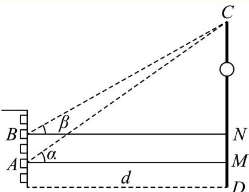
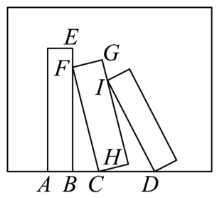
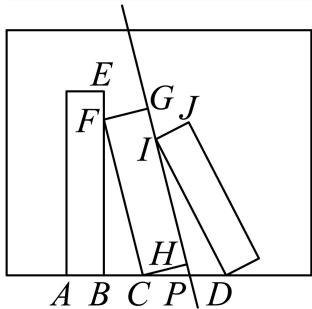

01 【来源：虹口25一模·17】
设 。
（1）当函数 的最小正周期为 时，求 在 上的最大值；
（2）若 ，且在 中，角 所对的边长为 ，锐角 满足 ，，求 的最小值。
答案与解析
答案
解析
（1）由 得 ，于是 。
当 时，，故在 取得最大值 。
（2） 时，，且 ，所以 。
由 得 。
余弦定理给出 ，等号当且仅当 时成立。
因此 的最小值为 。
FY27高数功底考 · 教师版 · 本专题 35 题
旧版 PDF 尚未同步近期校订，已暂停下载；请用打印／保存本专题 PDF 导出当前网页。教师版含答案与解析。
没有匹配的题目，请更换关键词或清空搜索。
设 。
（1）当函数 的最小正周期为 时，求 在 上的最大值；
（2）若 ，且在 中，角 所对的边长为 ，锐角 满足 ，，求 的最小值。
（1）由 得 ，于是 。
当 时，，故在 取得最大值 。
（2） 时，，且 ，所以 。
由 得 。
余弦定理给出 ，等号当且仅当 时成立。
因此 的最小值为 。
函数 ， 的值域为______。
[−1,1]
区间包含 与 ，正弦分别取到最小值−1和最大值1，且连续。因此值域为 。
函数 的最小正周期是______。
π
的最小正周期是
故答案为：π
音乐，是人类精神通过无意识计算而获得的愉悦享受，1807 年法国数学家傅里叶发现代表任何周期性声音的公式是形如 的简单正弦型函数之和，而且这些正弦型函数的频率都是其中一个最小频率的整数倍，比如用小提琴演奏的某音叉的声音图象是由图 1、2、3 三个函数图象组成的，则小提琴演奏的该音叉的声音函数可以为（ ）。

图 1：

图 2：

图 3：

A.
B.
C.
D.
C
三幅图对应振幅依次为 ，周期依次为 ；由 ，角频率依次为 。
把三项相加，得到C中的表达式。
已知直线 是函数 （）的一条对称轴。
（1）求函数 的解析式。
（2）设函数 ，求 在 上的最大值和最小值。
最大值为√2，最小值为-1
（1）对称轴条件给出 ，故 。结合 ，得 。
（2） 当 ，角 。故最大值为 （），最小值为−1（）。
已知函数 ，其中 。
（1）求函数 的最小正周期及单调减区间。
（2）求函数 ， 的最大值，并求出取得最大值时 的值。
；单调减区间为 ，。
最大值为 ，此时 。
（1）最小正周期 。由 ，得单调减区间 ，。
（2） 给定区间对应 ，故最大值为2，在 时取得。
函数 是（ ）。
A. 最小正周期为 的奇函数
B. 最小正周期为 的偶函数
C. 最小正周期为 的奇函数
D. 最小正周期为 的偶函数
A
，其最小正周期为 ，且 ，故为奇函数，选A。
已知函数 的表达式为 ，。
（1），求 的值；
（2）若 依次成等比数列，求 的值。
。
。
（1） 且 ，所以 。于是 。
（2）三项依次为 。
成等比数列要求各项非零，且 ，故 。
结合范围得 ，此时公比为 ，符合题意。
下列函数 的最小正周期是 的是（ ）。
A.
B.
C.
D.
A
A中 ，最小正周期为 。
B等于 ，周期为 ；C恒等于1，不存在最小正周期；D等于 ，最小正周期为 。
故选A。
已知 ，则 ______。
0
由 得 。因此 。
对于实数 ，定义集合 ，集合 的元素个数为 ，给出下列说法：
①存在 ，使得 ；
②存在 ，使得 ；
③存在 ，使得 ；
④存在 ，使得 。
其中正确的说法有（ ）个。
A. B. C. D.
C
由 及半角公式，半角正弦的可能值为 这些符号均可通过解的 周期移动达到。
当 ，两组绝对值重合，恰有2个值；当 ，为 ，恰有3个值；当 ，两组非零且绝对值不同，恰有4个值。
因此不可能有1个值，②③④正确，选C。
在 中，三个内角 的对边分别为 ，若 ，则 的值为______。
整理条件得 ，由余弦定理 。，故 ，所以 。
在 中，若 ，，其面积为 ，则 ______。
由面积 得 。余弦定理给出 ，故 。边长为正，所以 。
若 ，则 ______。
由二倍角公式，。
已知角 为第四象限角，且 ，则 ______。
为第四象限角，
若将函数 的图象向右平移 个单位长度后得到的图象对应函数为奇函数，则 ______。
右移后函数为 。
其为奇函数当且仅当 ，。
结合 ，唯一得到 。
已知 ，不等式 在 中的整数解有 个，关于 的个数不可能的是（ ）。
A.
B.
C.
D.
D
将正整数 按模 分类。
时正切无定义；其余五类的正切值依次为 对应个数分别为 。
长度为 的开区间至多包含相邻的两个中间值：两侧间隔 ，而三个中间值的跨度也为 。
所以满足条件的整数个数至多为 ，不可能为 。
取 得 ；取 得 ；取 得 。故选 D。
校订说明：原解析关于零解的参数范围表述过宽，已改为可直接验证的具体取值。
在 中，角 所对边的边长分别为 ，且 。
（1）若 ，，求 的值；
（2）若 为锐角三角形，求 的取值范围。
（1）。余弦定理给出 ，故 。
（2）正弦定理把条件化为 。
利用 ，得 。
锐角三角形中 ，正弦严格递增，故 ，。
三个角都锐要求 ；反之此范围都可组成符合条件的锐角三角形。
因此 。
若 是一个三角形的内角，且函数 在区间 上是单调函数，则 的取值范围是______。
函数的递增区间为 递减区间为 因为 且所给区间包含 ，无论递增或递减，能够包含所给区间的分支都只能取 。
递增时须有 、，得 ，结合内角条件为 。
递减时须有 、，得 ，与 矛盾。
故范围为 。
函数 的最小正周期是 ，则 ______。
2
由最小正周期公式 ，且 ，得 。
已知 ，。
（1）设 ，求 ， 的值域；
（2）， 的最小正周期为 ，若在 上恰有 3 个零点，求 的取值范围。
（1） 时，令 ，则 。正弦在此区间最大值为 ，最小值为 ，故值域为 。
（2）由周期 得 。
零点为 。
从 往右依次为 ，因此按题设恰有三个零点，得 。
已知函数 。
（1）当 ，，求函数 在 处的切线方程；
（2）若函数 的最小正周期为 ，且 在 上恰好有 1351 个解，求 的取值范围。
或
（1）由 及 ，得 。
于是 ，，切线为 。
（2）由周期 得 。
令 ，则 。
方程的根为 或 ，。
由于 ，前675个完整周期恰含1350个根。剩余长度 的半开区间 必须恰含一个根。
若 ，必须包含 而不包含 ，故 ，即 。
若 ，剩余区间恰含 ，均满足。若 ，剩余区间无根，不满足。
故 。
在 中，已知 ，，，则 的值为______。
根据给定条件，利用正弦定理及二倍角公式求解即得
在 中，由正弦定理得 ，而 因此 ，即 ，所以 故答案为
三角形 中，，，，则 ______。
，且 。由正弦定理，
已知 的内角 所对边的长度分别为 。
（1）若 ，，求 的面积。
（2）若 ，求 的值。
（1）余弦定理给出 ，故 ，。面积为 。
（2）由正弦定理及题设分母非零，交叉相乘得 ，因此 。
，故 ，于是 。
中，，，，则 ______。
根据正弦定理以及余弦定理，可得答案.
由题意可得
因为 ，所以
故答案为：
在 中，角 所对应的边分别为 ，其中 。
（1）若 ，，求边长 ；
（2）若 ，，求 的面积。
（1），由正弦定理及 ，有 ，故 。
于是 。
（2）由正弦定理， 化为 。
约去正数 ，得 。
又 ，排除 ，故 。
于是 ，面积为 。
在 中，角 所对的边分别为 ，且 。
（1）若 ，，求 ；
（2）若 ，求 的面积的最大值。
（1）正弦定理给出 ，故 。又 ，所以 。
（2）由余弦定理与 ，有 ，等号当且仅当 。
因此 ，从而 。
等号条件满足三角形边长要求，故所求最大值为 。
在 中，角 的对边分别为 ，已知 ，。
（1）若 ，求 的面积。
（2）若内角 的对边 ，求角 的正弦值及 外接圆的半径 。
（1）由 及 ，得 ，所以面积为 。
（2）由余弦定理，，故 。
正弦定理给出 。
如图所示，小明和小宁家都住在东方明珠塔附近的同一幢楼上，小明家在 层，小宁家位于小明家正上方的 层，已知 。小明在家测得东方明珠塔尖的仰角为 ，小宁在家测得东方明珠塔尖的仰角为 ，则他俩所住的这幢楼与东方明珠塔之间的距离 ______。

根据正切函数的定义得到方程，解出即可.
分别过点A,B作CD的垂线，垂足分别为M,N,

则根据正切函数的定义得
则 ，解得
故答案为：
如图，某画框内摆放着三个矩形工艺品，它们的长均为 ，宽均为 。点 在同一条直线上，点 在边 上，点 在边 上，测得 两点间距离为 。为了使 ，则 两点间距离为______ （精确到 ）。

20.4
在直角三角形 中，，所以 ，，。
延长 交 于 。
由矩形的垂直关系， 与 相似，故 。
在 中，，且题设角度关系给出 ；另 。
正弦定理得 。
所以 。

若 ，则 ______。
由诱导公式，。
函数 的值域为______。
，而正弦取遍 ，故值域为 。
已知向量 ，，。
（1）求函数 的单调递减区间；
（2）若函数 在区间 上恰有2个零点，求实数 的取值范围。
（1）由数量积及倍角公式， 令 ，得单调递减区间 ，。
（2）令 ，则 ，问题化为 恰有两解。
正弦在左段 递增，在右段 递减。
右端点不取，值为 ，最高点值为1，所以恰有两解当且仅当 ，即 。
顶角为 的等腰三角形被称为黄金三角形，其底边和腰之比正好为黄金比 ，用黄金比 表示 ______。
把两腰长度取为1，则底边长为 。余弦定理给出 ，所以 。